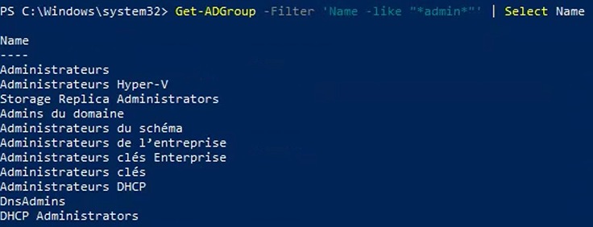
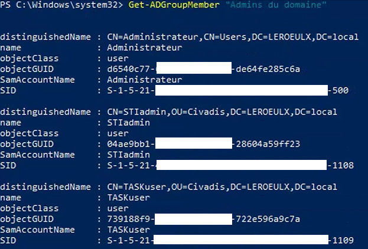

Tutorial – Active Directory Health Check
This check verifies the membership of privileged Active Directory groups. Reviewing administrative group membership is essential to ensure the principle of least privilege and reduce security risks.
Some Active Directory environments use localized group names (for example French or Dutch names instead of English).
First, list all groups containing the word admin to identify the exact group names used in the domain.
Get-ADGroup -Filter 'Name -like "*admin*"' | Select Name
You can also list all Active Directory groups if needed:
Get-ADGroup -Filter * | Select Name
Look for privileged groups such as:
Use the exact group name returned by the previous command.

Once the correct group names are identified, review their memberships and verify that each account has a legitimate administrative purpose.
Use PowerShell to display group members with the exact names identified in Step 1.
Get-ADGroupMember "Admins du domaine"
Get-ADGroupMember "Admins de l’entreprise"
Get-ADGroupMember "Admins du schéma"
Get-ADGroupMember "Administrateurs"
Replace the group names above with the exact names returned in your own environment.

Verify that no nested groups are present inside privileged groups.
A nested group means that another Active Directory group has been added inside a privileged administrative group.
Use PowerShell to display only nested groups:
Get-ADGroupMember "Admins du domaine" | Where-Object {$_.objectClass -eq "group"}
Replace "Admins du domaine" with the exact group name identified in Step 1.